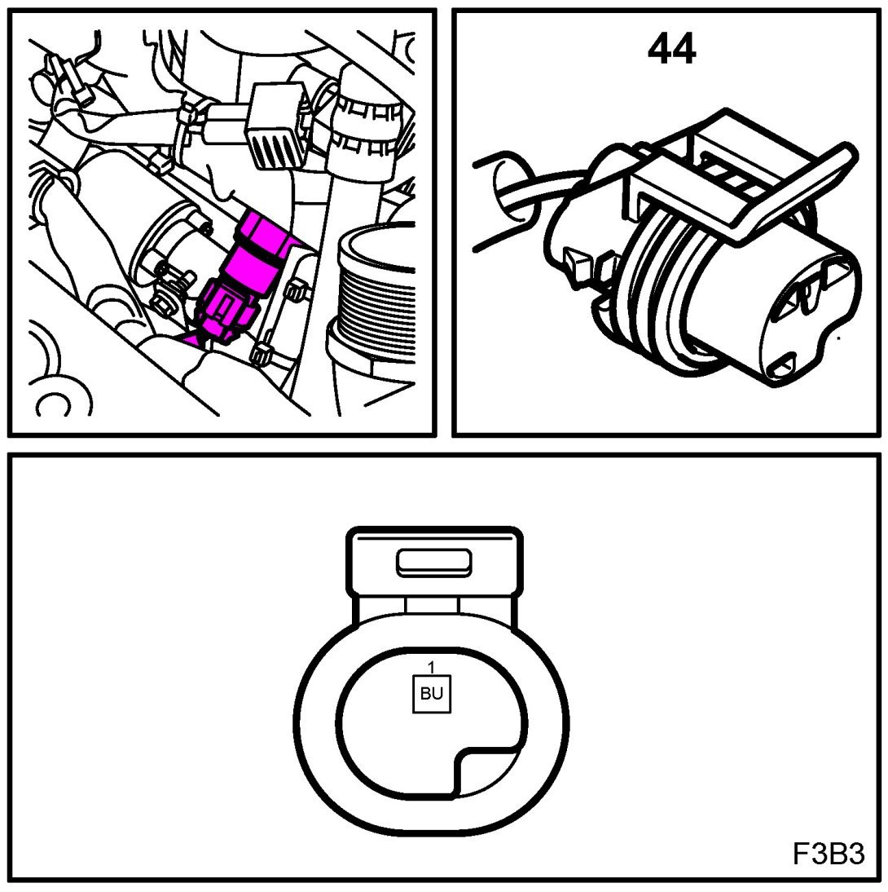
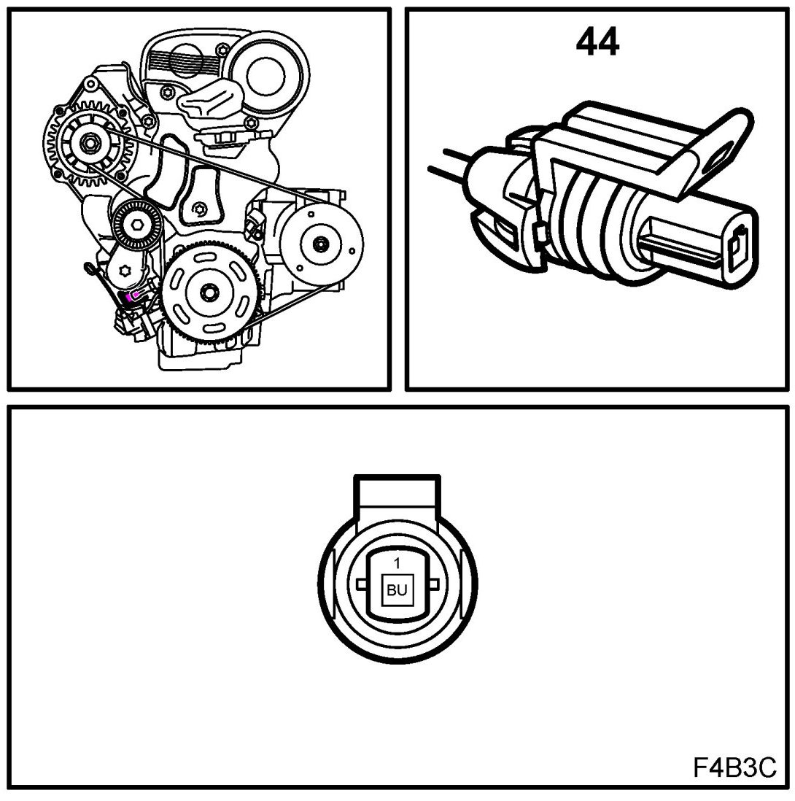
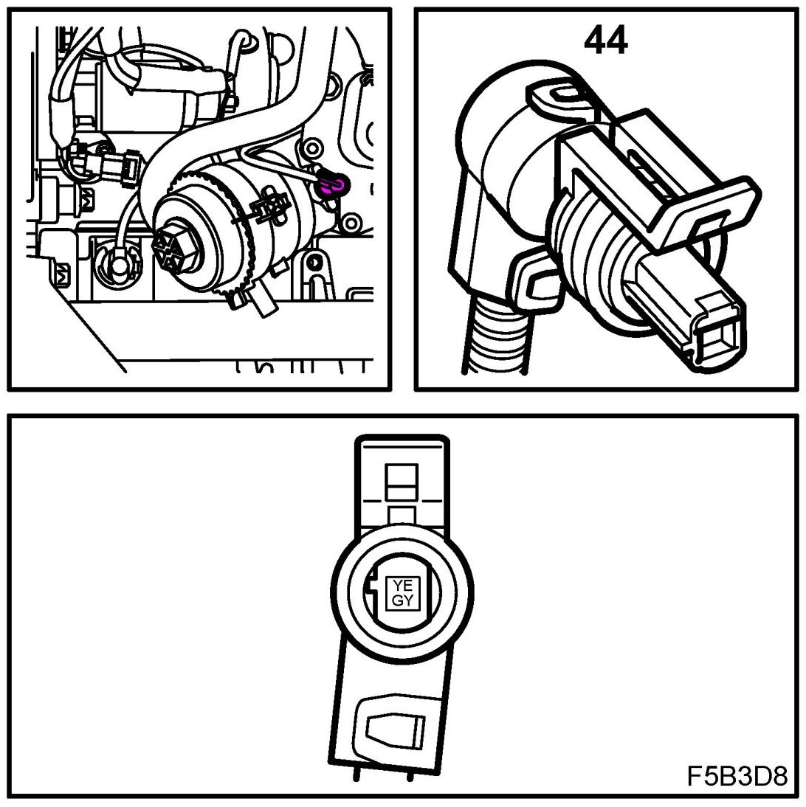
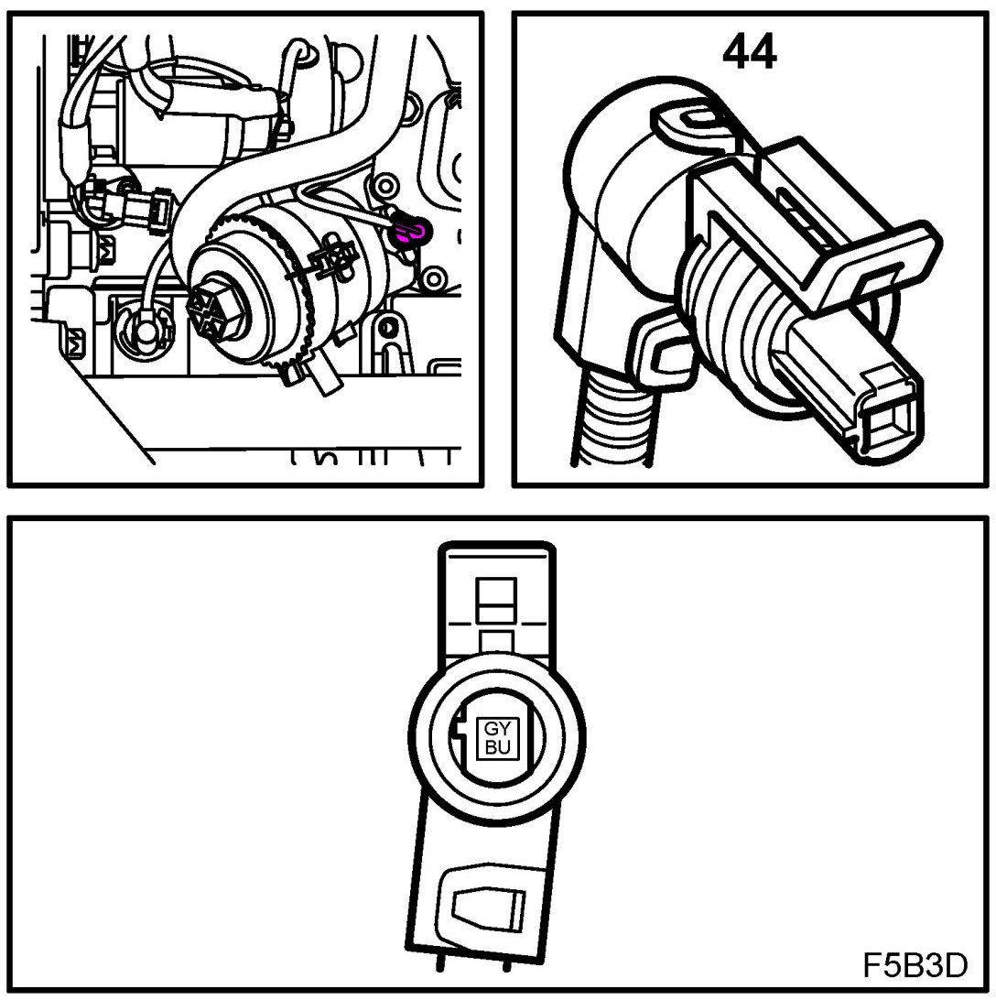

Oil Pressure Sensor: Locations
Engine Oil Pressure Switch (44)
Location:
T8
by the front edge of the oil filter

Simtec
under the generator

EDC16 8V
by the front edge of the oil filter

EDC16 16V
by the front edge of the oil filter
